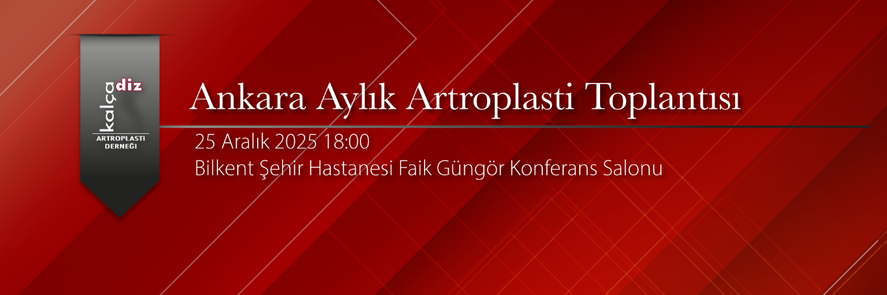

Değerli meslektaşlarımız,
Ankara Aylık Artroplasti Toplantısı 25 Aralık Perşembe 18:30'da Bilkent Şehir Hastanesi Faik Güngör Konferans Salonu'nda gerçekleştirilecektir.
Aralık ayı toplantısında konu başlığımız "Kalça Artroplastisinde Yaklaşımlar'' olacaktır.
Prof. Dr. Bülent Atilla, Prof. Dr. Bülent Erdemli ve Prof. Dr. Bülent Özkurt, kalça artroplastisinde kendi tercihleri olan yaklaşımları sunacaklar. Aynı oturumda bu konudaki güncel makaleler de tartışılacaktır.
Aylık toplantımızın faydalı geçmesi dileği ile özellikle genç asistan ve uzman arkadaşlarımızın çok faydalanacağını düşündüğümüz bu toplantıya tüm meslektaşlarımız davetlidir.
Prof. Dr. Kerem Başarır (KADAD adına)
Prof. Dr. Bülent Özkurt (Bilkent Şehir Hastanesi)
Moderatör:
Prof. Dr. Bülent Özkurt
Program:
18:00 - 18:30 İkram - yemek
18:30 - 18:40 ‘Direk Anterior Yaklaşım’
Prof. Dr. Bülent ATİLLA
18:40 - 18:50 ‘Posterior Yaklaşım’
Prof. Dr. Bülent ERDEMLİ
18:50 - 19:00 ‘Anterolateral Yaklaşım’
Prof. Dr. Bülent ÖZKURT
19:00 - 19:15 Tartışma
19:15 - 19:30 İki Makale
19:30 - 19:45 Vaka Tartışmaları
Not: Tartışılmasını istediğiniz olgular veya sunmak istediğiniz sonuçlar için planlama açısından lütfen toplantı öncesi iletişime geçiniz.
Toplantı için iletişim:
Dr. Bülent ÖZKURT drbulentozkurt@yahoo.com
Dr. Kerem BAŞARIR basarirkerem@yahoo.com
Prof. Dr. Kerem BAŞARIR
Nextlevel Ofis A Blok K:8 D:34
Kızılırmak Mah. Dumlupınar Bulvarı No:3A Söğütözü - Çankaya/ANKARA
